Tutti i materiali
Cerca un tema o filtra per area e classe. Ogni pagina del materiale porta direttamente al prodotto.
1.260 materiali
Tema
Classe

Bad Dürkheim – Scheda: testo con spazi vuoti, comprensione all'ascolto e crucipuzzle

Banca centrale europea – Scheda: testo con spazi vuoti, comprensione all'ascolto e crucipuzzle

Apprendimento – Scheda: testo con spazi vuoti, comprensione all'ascolto e crucipuzzle

Neunkirchen – Scheda: testo con spazi vuoti, comprensione all'ascolto e crucipuzzle
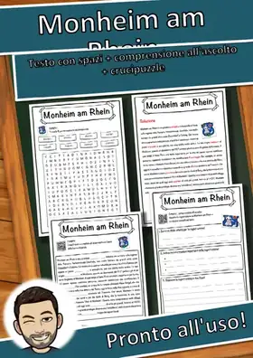
Monheim am Rhein - Scheda - testo con spazi vuoti, comprensione all'ascolto e crucipuzzle

Bad Reichenhall – Scheda: testo con spazi vuoti, comprensione all'ascolto e crucipuzzle

Neu-Isenburg – Scheda: testo con spazi vuoti, comprensione all'ascolto e crucipuzzle

Populismo – Scheda: testo con spazi vuoti, comprensione all'ascolto e crucipuzzle

Rutherfordio – Scheda: testo con spazi vuoti, comprensione all'ascolto e crucipuzzle

Principe – Scheda: testo con spazi vuoti, comprensione all'ascolto e crucipuzzle

Plettenberg – Scheda: testo con spazi vuoti, comprensione all'ascolto e crucipuzzle
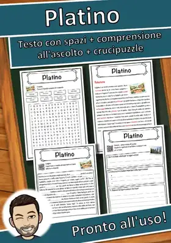
Platino – Scheda: testo con spazi vuoti, comprensione all'ascolto e crucipuzzle
Protestantesimo – Scheda: testo con spazi vuoti, comprensione all'ascolto e crucipuzzle
Repubblica Centrafricana – Scheda: testo con spazi vuoti, comprensione all'ascolto e crucipuzzle
Rüdesheim am Rhein – Scheda: testo con spazi vuoti, comprensione all'ascolto e crucipuzzle
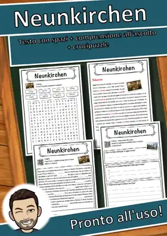
Neunkirchen - Scheda - testo con spazi vuoti, comprensione all'ascolto e crucipuzzle

Rhinocerotidae – Scheda: testo con spazi vuoti, comprensione all'ascolto e crucipuzzle
Neve - Scheda - testo con spazi vuoti, comprensione all'ascolto e crucipuzzle
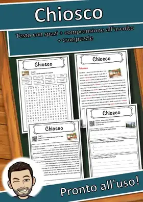
Chiosco – Scheda: testo con spazi vuoti, comprensione all'ascolto e crucipuzzle
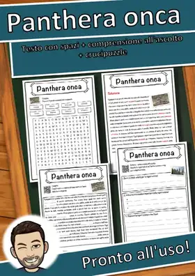
Panthera onca - Scheda - testo con spazi vuoti, comprensione all'ascolto e crucipuzzle
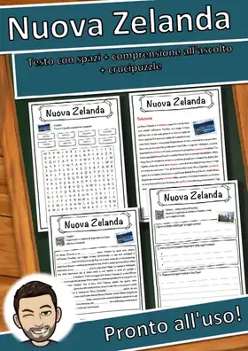
Nuova Zelanda – Scheda: testo con spazi vuoti, comprensione all'ascolto e crucipuzzle
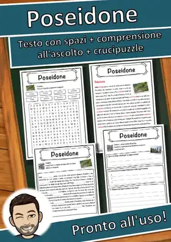
Poseidone – Scheda: testo con spazi vuoti, comprensione all'ascolto e crucipuzzle
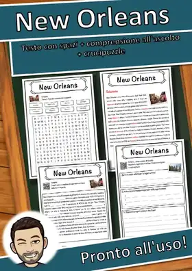
New Orleans – Scheda: testo con spazi vuoti, comprensione all'ascolto e crucipuzzle
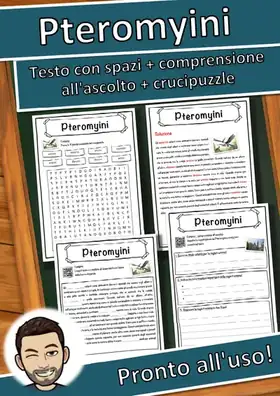
Pteromyini – Scheda: testo con spazi vuoti, comprensione all'ascolto e crucipuzzle
Pane – Scheda: testo con spazi vuoti, comprensione all'ascolto e crucipuzzle
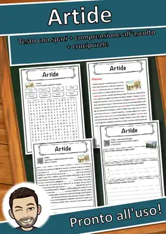
Artide – Scheda: testo con spazi vuoti, comprensione all'ascolto e crucipuzzle

Milano – Scheda: testo con spazi vuoti, comprensione all'ascolto e crucipuzzle

Rudolstadt – Scheda: testo con spazi vuoti, comprensione all'ascolto e crucipuzzle
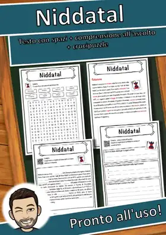
Niddatal – Scheda: testo con spazi vuoti, comprensione all'ascolto e crucipuzzle
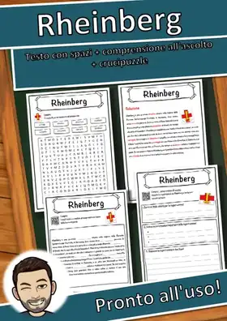
Rheinberg – Scheda: testo con spazi vuoti, comprensione all'ascolto e crucipuzzle
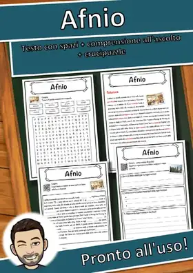
Afnio – Scheda: testo con spazi vuoti, comprensione all'ascolto e crucipuzzle
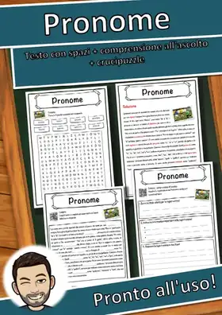
Pronome – Scheda: testo con spazi vuoti, comprensione all'ascolto e crucipuzzle

Parchim – Scheda: testo con spazi vuoti, comprensione all'ascolto e crucipuzzle
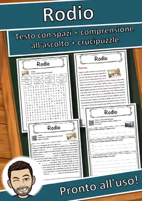
Rodio – Scheda: testo con spazi vuoti, comprensione all'ascolto e crucipuzzle
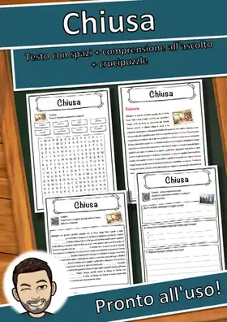
Chiusa – Scheda: testo con spazi vuoti, comprensione all'ascolto e crucipuzzle
Calw – Scheda: testo con spazi vuoti, comprensione all'ascolto e crucipuzzle
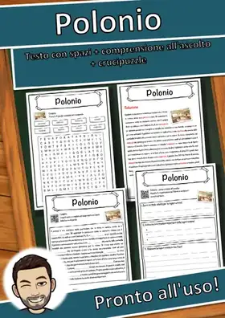
Polonio – Scheda: testo con spazi vuoti, comprensione all'ascolto e crucipuzzle
Reggia di Versailles – Scheda: testo con spazi vuoti, comprensione all'ascolto e crucipuzzle

Mittenwalde – Scheda: testo con spazi vuoti, comprensione all'ascolto e crucipuzzle
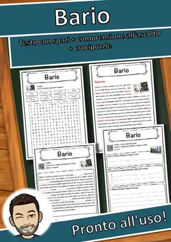
Bario – Scheda: testo con spazi vuoti, comprensione all'ascolto e crucipuzzle
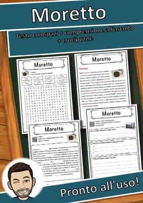
Moretto – Scheda: testo con spazi vuoti, comprensione all'ascolto e crucipuzzle
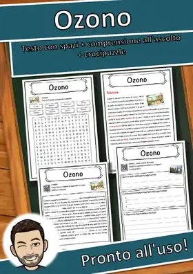
Ozono – Scheda: testo con spazi vuoti, comprensione all'ascolto e crucipuzzle
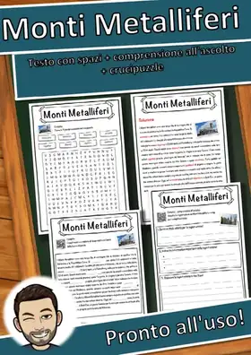
Monti Metalliferi – Scheda: testo con spazi vuoti, comprensione all'ascolto e crucipuzzle
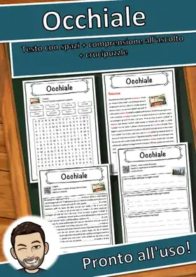
Occhiale – Scheda: testo con spazi vuoti, comprensione all'ascolto e crucipuzzle
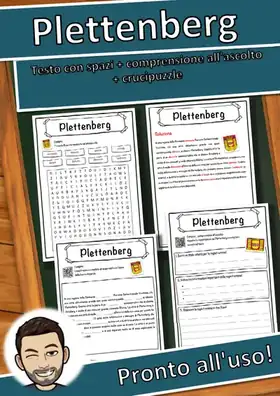
Plettenberg - Scheda - testo con spazi vuoti, comprensione all'ascolto e crucipuzzle
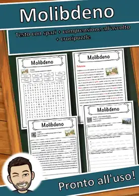
Molibdeno – Scheda: testo con spazi vuoti, comprensione all'ascolto e crucipuzzle
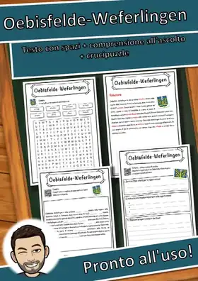
Oebisfelde-Weferlingen – Scheda: testo con spazi vuoti, comprensione all'ascolto e crucipuzzle
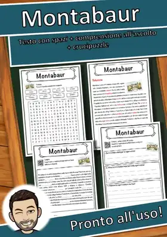
Montabaur – Scheda: testo con spazi vuoti, comprensione all'ascolto e crucipuzzle
Nessun materiale trovato: prova con un'altra parola o un altro filtro.